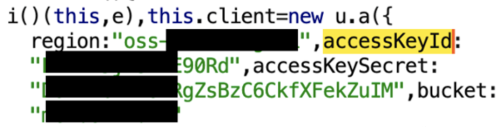

API漏洞
1、API暴露面
内部使用的API可能会意外地暴露在互联网上，这可能是由于错误的配置，或者只是因为假设没有人能够找到它。API的位置可以通过很多方式发现，包括分析JavaScript文件、分析暴露的源代码、观察主机名（如api.internal.example.com）和Google dorking。
例如之前的JS泄露OSS的accessKeyId、accessKeySecret

以及常见的JS接口未授权访问等、除此以外，在外部主机上发现像SSRF这样的漏洞，可能会让你获取到内部的API。
2、配置缓存风险
对于需要认证的API来说，返回的数据往往是动态的，并且是针对每个API密钥的范围。例如，以A的身份访问/api/v1/userdetails 应该返回A的详细信息，而以B的身份访问同一终点应该返回B的详细信息。一个常见的错误配置发生在API不使用标准的Authorization 头，而是使用一个自定义的头，如X-API-Key 。缓存服务器可能无法识别这是一个经过验证的请求，并可能将其缓存。
如果是这种情况，并且没有Cache-Control 或Pragma 头信息，那么简单地访问/api/v1/userdetails 可能会暴露另一个用户的信息。
3、暴露的Token
通过任何方式发现一个API密钥，都可能为你提供对API的访问。更糟糕的是，供内部使用的API往往没有必要实施复杂的认证流程，因此可能会实施静态令牌作为其认证。秘密令牌可能在代码库、客户端JavaScript、拦截流量等方面被发现。
例如一次在红队演练中内网横向时获取到的一个GF配置接口信息。里面暴露了接口的认证key与对应的接口信息，包括可以查看婚姻及伴侣等信息。

4、授权风险/IDOR
授权是检查一个经过认证的用户是否可以访问一个特定的用户的过程。一个常见的与授权有关的漏洞被称为不安全的直接对象引用（IDOR）。例如，在一个开票应用程序的API中，我们可能有一个端点，用来获取发票的详细信息参数是应该返回的发票的标识符。如果这个端点是安全的，我应该只能得到属于我的发票的细节。例如，如果我创建了一张ID为1234的发票，那么它应该返回详细信息。如果我试图通过浏览/api/v1/invoices/?id=1233 来访问一张我没有创建的发票，它应该返回一个错误。如果我能够改变标识符来查看其他用户的发票细节，这就是一个被称为IDOR的漏洞。也就是所谓的越权。为了应对IDOR问题，今天许多API都利用UUID作为对象的标识符。一个UUID看起来像这样。f1af4910-e82f-11eb-beb2-0242ac130002，这也是大多数金融行业的修复处理方式。值得注意的是，利用UUID作为标识符并不是缓解IDOR问题的有效方法。事实上，UUID RFC特别指出了这一点。虽然利用UUIDs而不是整数作为对象的ID是很好的做法，但它们绝不应该被用作防止IDOR攻击的唯一保护措施。特别是可预测的随机数反而可能会导致情况更加严峻。就例如结合前端的敏感信息泄露，有的单位会将其生成算法暴露在前端，并且后端并未有效的进行前后端认证，导致可自行枚举进行攻击。
5、未记录的端点
经常会遇到这样的情况：尝试渗透攻击的API没有文档（或者至少没有你可以访问的文档）。同样常见的是，一个有文档的API会有超出文档内容的端点。有时，这些端点的存在可能是一个安全问题–例如，端点可能是为管理目的而设计的，并允许你作为一个低权限用户执行管理任务。其他时候，这些端点可能会出现漏洞，只是因为它们没有像那些容易发现的端点那样被测试。
这里我们可以通过用Burp来检测，例如通过查看目标选项卡检查所使用的端点。许多API会给出足够详细的错误，以列举未记录的端点和参数。例如，向/api/v1/randomstring 发送一个空白的POST请求，可能会导致一个错误，大意是无效路由，有效路由是[/users,/invoices,/customers] 。
如果你知道一个与API互动的应用程序，你可以分析该应用程序的JavaScript，以收集可能被访问的API端点的列表。这里建议使用API字典来进行模糊测试。通过遍历的方式来发现表面不易发现的接口。虽然这块在下面的解决方法中建议采用类似于swagger这种比较成熟的API功能，但是配置不当也有可能导致对应的接口披露。例如说：

这种就是直接披露了应用环境的接口信息。
6、版本差异风险
当一个组织发布一个API时，它可能与许多不同的应用程序对接。如果API在任何时候被更新，它可能会对这些应用程序中的一个或多个引入破坏性的变化。出于这个原因，多个API版本经常被实施，作为支持旧的API模式的一种手段，同时也为新的用户逐步升级API。
测试所有版本的API是值得的。旧版本可能仍有安全问题，这些问题后来在新版本中得到了修复，而较新的/边界/测试版可能引入了新的安全问题。
api版本管理的一个常见模式是:
1 | /api/v1/ /api/v2/ /api/beta/ |
以及未投产时的生产环境入口：
1 | qa |
7、无速率限制导致批量请求攻击
大多数时候，API对用户的请求次数没有任何保护。这被称为 “缺乏速率限制”，当攻击者可以调用API数千次以导致一些非预期的行为时，就会发生这种情况。服务器将试图满足这些请求中的每一个，这有可能通过对服务器进行超负荷的请求，使其处于DOS状态 允许攻击者快速渗出敏感的用户信息，如：用户ID、用户名、电子邮件等。即枚举。通过强制执行一个向受害者发送电子邮件/短信的功能，淹没受害者的收件箱。即短信dos攻击、邮箱dos攻击。
例如说看一个攻击场景，在一个检查证书的API端点上没有速率限制。GET /api/v1/user/1234/login/?password=password
通常情况下，你不会看到在这样的GET请求中发送密码，但为了本演示的目的，假设你看到了。为了对上述端点中的密码进行暴力攻击，攻击者可以使用BurpSuite’s Intruder ）工具。这个工具允许我们定制不同种类的暴力攻击，但在这个例子中，我们将给它提供一个简单的密码列表。
在几秒钟的时间里，入侵者将发出数百个API请求，在每个请求中尝试使用不同的密码。
1 | GET /api/v1/user/1234/login/?password=falsepassword1 |
为了防止速率限制的错误，应用程序应该对用户在一定时间范围内请求API的频率进行限制。设置的确切限制将取决于该API或端点的使用情况。
8、接口竞争条件攻击
竞争条件是指两个或更多的请求在同一毫秒内被发送到一个API。当一个API没有处理这种情况的机制时，会导致API以非预期的方式处理这些请求。
一个潜在的竞赛条件的攻击场景可能是在一个有漏洞的电子商务应用程序上兑换折扣或促销代码时出现。
1 | POST /api/v1/discount |
BurpSuite有一个名为Turbo Intruder的扩展，允许用户使用内置的race.py 脚本来测试竞争条件。//该工具非常实用测并发，其并发包速率最快可达到每秒2W个。
在Turbo Intruder中配置好攻击后，攻击者可以向API发送多个并发请求，以换取这个优惠代码。
1 | POST /api/v1/discount 200 OK |
如果API在收到第一个并发请求后没有立即使促销代码失效，那么折扣金额可能会增加一倍、两倍。
包括像有的短信炸弹无法正常批量获取的时候也可利用竞争条件绕过批量获取。尽管有图形验证码限制，但依旧可绕过。

竞争条件攻击是攻击者发送修改资源的请求的速度与应用程序更新该特定资源的速度之间的竞赛。
9、XML注入
XXE代表XML外部实体，这种注入漏洞可以在任何使用API处理XML数据的地方测试。SOAP APIs也可能受到XXE注入的攻击，因为它们是基于XML的。
一个使用XML的API端点看起来是这样的。

XXE注入是指当攻击者注入指定DTD之外的自定义外部实体。一旦这些外部实体被API解析，它可以让攻击者访问应用程序的内部文件，升级到SSRF，将敏感数据泄露给攻击者控制的域或DOS服务器。
这是一个请求的例子，攻击者注入了一个名为xxe的外部自定义实体，这个实体的目的是为了检索一个内部文件。
1 | POST /soap/v2/user HTTP/1.1 |
如果API允许使用标准的XML解析器来处理数据，那么这个注入的外部实体将被应用程序处理并将/etc/passwd的内容返回给攻击者。例如说XML的用户名枚举。

10、Content类型转换
即使API可能使用JSON作为数据格式进行通信，底层服务器/框架仍然可能接受其他数据格式，如XML。因此，当看到一个API的content-Type 为application/json 时，仍然可以通过将其值切换为Content-Type: text/xml 来尝试测试XXE。
例如，如果一个API使用JSON
1 | POST /api/v1/user HTTP/1.1 |
它可以被修改为以这种方式发送XML数据。
1 | POST /soap/v2/user HTTP/1.1 |
还有的就是我们常见的各类注入攻击，包括sql注入、命令注入等，就不在叙述了。